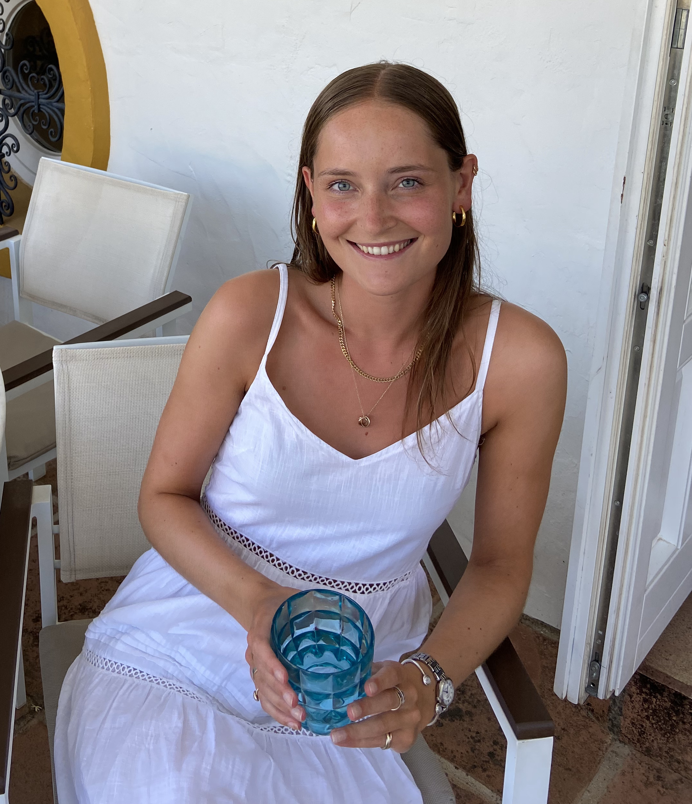

Skills
During my Software Engineering Immersive Course at General Assembly I learnt numerous skills both in front-end and back-end development. Learning these technologies have provided me with Full-Stack skills which are listed here.
JavaScript

Django
CSS
PostgreSQL
Node.js
SASS
GitHub

Express.js
React JS

MongoDB
HTML
VScode
Python
git
Postman
Yarn
Projects
I created four projects during General Assembly's Software Engineering Immersive Course. These are listed below.
.png)
Eclectic
A Full-Stack application using React, Python, Django REST framework and SASS. I individually created an interiors app which held a database full of products which they could filter, users could register an account, post products to the community, edit their own products, add products to their wish list, view trending homeware articles and review particular products too.
Aioli
A Full-Stack MERN application using React, Node.js, Express, SASS and MongoDB. As a group we created a recipe app which held a database full of recipes. Users could register an account, post their own recipes, rate and comment on each other's recipes and save particular recipes to their account.
.png)
Napster
Napster is an app where we used Napster’s API to showcase the top artists, tracks and albums in the UK. It is also somewhere where you can search for trending music by particular genre and you can search for any artist you like. This was a 48 hour hackathon pair coded project and was my first experience using React and a public API.
Frogger
This was my first Project after three weeks into General Assembly’s immersive software engineering course and was also my first ever project using JavaScript. This was an individual project that I spent one week working on. I decided to put my own spin on Frogger and based it around saving ‘Poppy the Puppy’, who had to cross a river and other obstacles to get back to her kennel.
Experience
General Assembly
Software Engineering Immersive Course
September - December 2021
- A three month software engineering course learning the key skills required to become a full-stack developer. It consisted of daily lectures, standups, coding labs, pair-coding, homework and four projects listed above.
- Learnt the fundamental technologies required to become a full-stack software engineer: JavaScript, HTML, CSS, SASS, MongoDB, PostgreSQL, Django, Python and React.
Brora
Sales Assistant
September 2017 - 2019
- Involvement in stock management and control.
- Helping to manage and resolve customer complaints and queries.
- Key skills gained are an improved understanding of sales, as well as excellent customer service skills.
Tattersalls Horse Sales
Assistant
April - December 2017
- Assisting the auctioneer on sales days.
- Liaising with veterinary personnel during sales.
- Key skills gained were a greater understanding of the horse racing industry and improved time management skills.
Education
General Assembly: Software Engineering Immersive Course, Sept-Dec 2021
Newcastle University: 2:1 BA (Hons) Politics 2018-2021
Code First Girls: Coding Kick-Starter Course, 2020
About
My interest in software development began after I graduated from University with a degree in Politics. After graduating, I decided that I did not want to pursue my Political career any further and enrolled in an introductory course in software engineering at Code First Girls. This sparked my fascination for technology and led me to discover my love of problem solving. I then decided to enroll in a Full-Stack Software Engineering Immersive course at General Assembly in order to take my curiosity for coding and turn it into a reality. My experience at GA has not only taught me the necessary skills required to become a Web Developer, but also how important it is to work in a team. I am now looking for opportunities where I can further develop my knowledge as a junior software engineer.